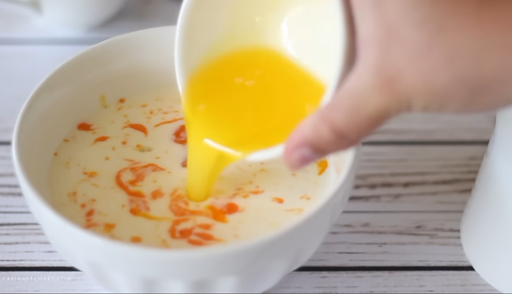
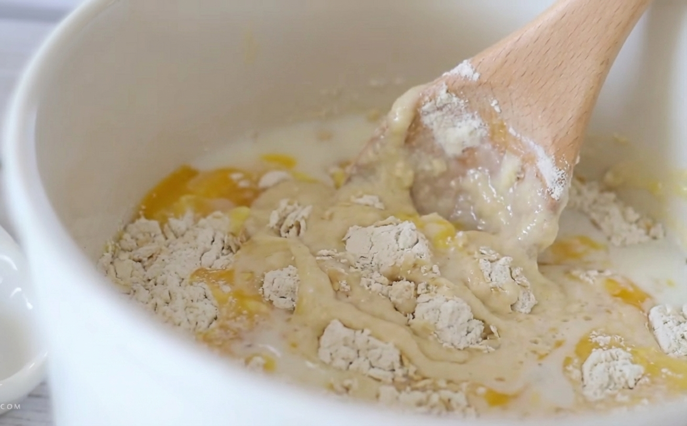
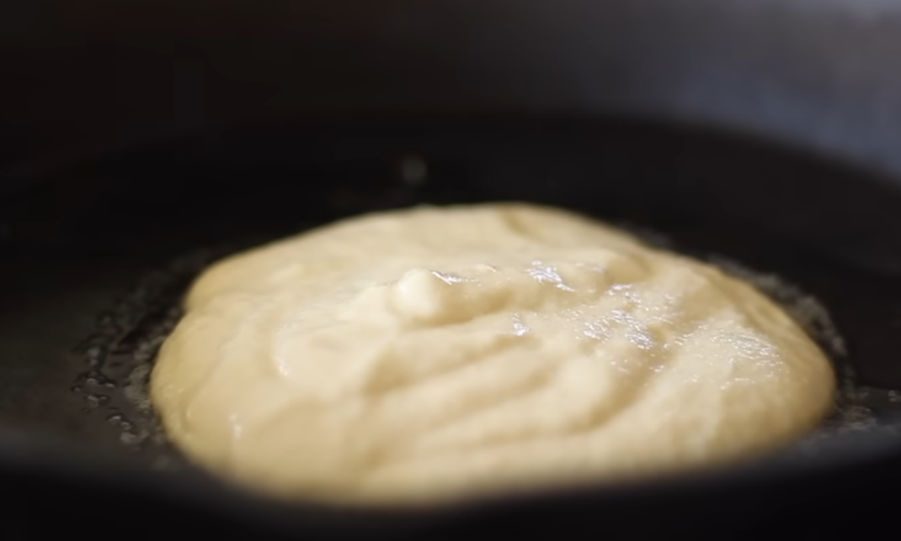
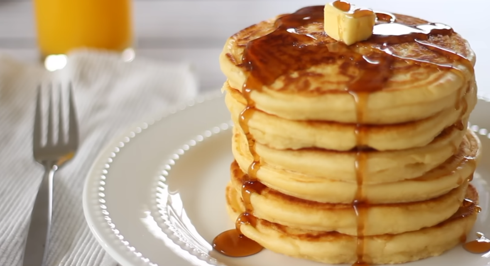

Classic Fluffy Pancakes
The best breakfast recipe you will ever need. Simple and delicious.

Ingredients
- 190g Flour
- 20g Baking Powder
- Pinch of Salt
- 30g Sugar (optional)
- 1 Egg
- 310ml Milk
- 60g Melted Butter
- 0.5 Teaspoon Vanilla Essence
Watch How to Make It
Instructions
-
Mix Dry Ingredients
In a large bowl mix together the flour, baking powder and salt with a wooden spoon. Set to the side.

-
Mix Wet Ingredients
In a smaller bowl crack in the egg and pour in the milk. Add the melted butter and vanilla essence. Use a fork to mix together until everything is well combined.
 -
Combine All
Make a well in the dry ingredients and pour in the wet. Fold the batter together with a wooden spoon until there are no longer any large lumps.
 -
Start Cooking
To cook the pancakes heat a heavy based pan like cast iron over medium low heat. When the pan is hot add a small amount of butter and ⅓ cup of the pancakes batter.
 -
Flip & Serve
Cook the pancake for 2-3 minutes each side. Repeat with remaining batter. Serve the pancakes stacked high with butter and maple syrup. Enjoy!
